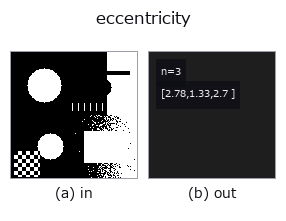

features op• Data kinds: region → match
• Call: fullseye.apply(img, "eccentricity", a=0.5, b=0.5) (the 2-D model is one image plus two scalar knobs a,b∈[0,1])
• HALCON equivalent: eccentricity (the HALCON reference is a useful guide to its meaning and parameters)

*The figure is the actual output on a synthetic 128×128 input. Left: input, right: output. Point clouds are drawn as a top-down scatter (brightness = z), 1-D series as a line plot, volumes as the maximum-intensity projection along z, videos as the middle frame, complex images as magnitude; return values that are not pictures are shown as the values themselves.*
*Knob a does not change the output (measured: identical at 0.1 / 0.5 / 0.9).*
*Knob b does not change the output (measured: identical at 0.1 / 0.5 / 0.9).*
Stages (the ops that come before → this op, left to right):
▸ eccentricity: stages (docs site)
Returns the three ellipse-derived shape features `(Anisometry, Bulkiness, StructureFactor) as a 3-component vector of match sort (a single scalar cannot carry three values — the same shape as area_center`).
> The detailed description below is the original text — the summary and the headings are translated.
`Ra/Rb を同じモーメントを持つ楕円の半径、A` を面積として
`Anisometry = Ra/Rb`(細長さ。円で 1、下限 1)
`Bulkiness = π·Ra·Rb / A`(楕円をどれだけ埋めていないか。円で 1)
`StructureFactor = Anisometry·Bulkiness - 1`(円で 0)
HALCON の `eccentricity`（Shape features derived from the ellipse
parameters.）と同じ 3 値・同じ式。3 つとも無次元なので正規化していない。
★2026-09-26 まで skimage の離心率 `sqrt(1-(b/a)²)` という**3 つのどれでもない
量**を 1 スカラーで返していた(円で 0.0 対 HALCON の 1.0、4x80 の棒で 0.999 対
20.65)。1 スカラーでは 3 値を表せないため、`area_center と同じ match`
ソートに変えた。`docs/hardening/halcon-named-shape-factors.md`。
領域が空のときは円の値 `(1, 1, 0)` を返す fail-soft 仕様(成分数は入力で
変わらない)。`a, b` は未使用。
• gallery2d_features family guide
• Sample-data catalog (download URLs / licences) — 2-D uses skimage.data (BSD/public domain) plus synthetic images; 3-D lists download URLs for real data sources (Stanford, PDS, …).
• Operator provenance and references — the sources of the research/methods this op family came from.
• The canonical algorithm (author, year) and its uses are named in the family usage guide above.
The program below has been verified to run (same input as the figure). In Studio's help this block becomes buttons that load and run it on the spot.
threshold 0.50 0.50 eccentricity 0.50 0.50
▸ Load this pipeline · Load & run
• gallery2d_features — py -3.11 examples/gallery2d_features.py
• poc_rotation_invariance_audit — py -3.11 examples/poc_rotation_invariance_audit.py
match as input)features)effective_bit_depth · blob_count · area_frac · count_contours · total_length · vol_count · sk_euler · sk_entropy_feat
*Provenance: ops.py — 2D operator registry. This per-op note is generated by tools/opdocs.py md (do not hand-edit).*
© 2026 Kazufumi Furuse — Fullseye operator documentation. Licensed under Apache-2.0.
{kind=link}